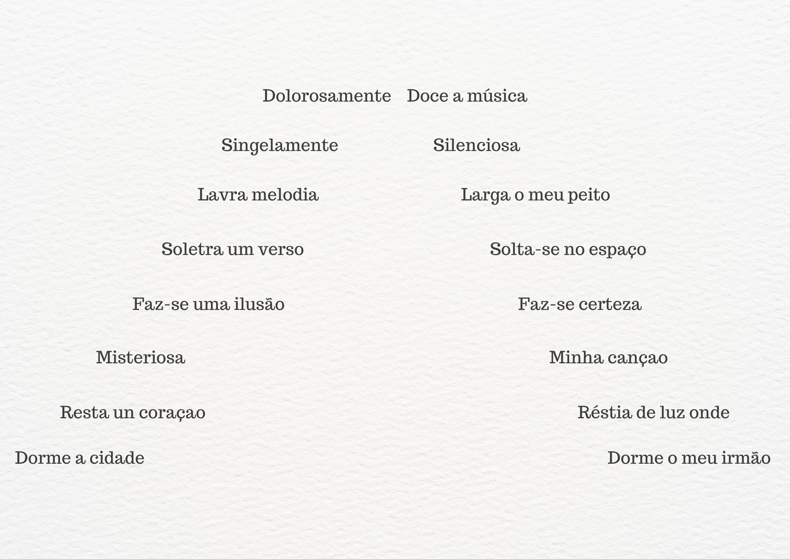
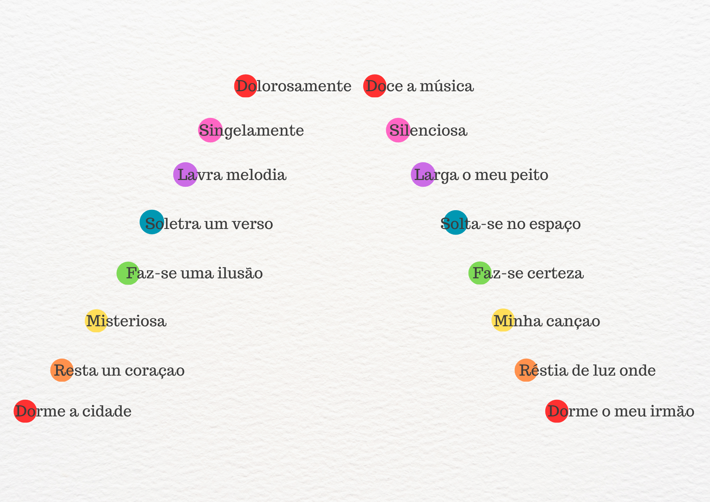
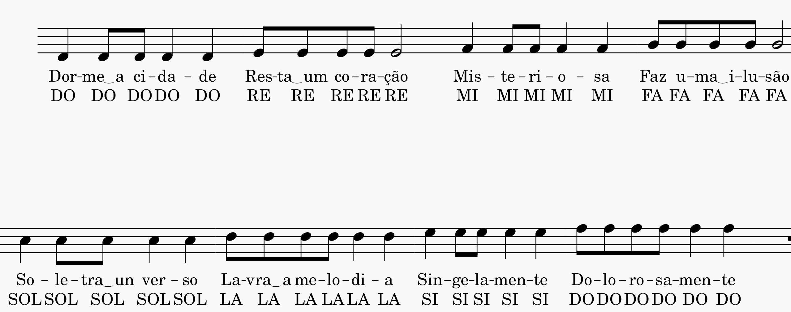

Minha Canção: propuesta didáctica para el abordaje de las notas musicales
Las 7 Notas Musicales: Minha canção
Enfoque desde las competencias específicas
Competencias específicas
Criterios de logro
Contenidos
Interpretativa (CE2)
Desarrolla procesos cognitivos y afectivos en el acto de comunicación y expresión
Resignifica las experiencias musicales previas y las relaciona con las nuevas
Frases rítmicas (en compás de 4 tiempos, con blancas, negras y corcheas) y melódicas (escala diatónica, ámbito de 8va)
Lectoescritura musical
Músicas del mundo (música vocal, género popular latinoamericano)
Textura musical: polifonía a 2 voces (homofonía y heterofonía)
Cultural (CE4)
Interpreta obras vocales en forma individual y grupal
Demuestra interés y autonomía en la ampliación de su acervo cultural y repertorio musical
Manejo de los elementos del lenguaje musical (CE6)
Desarrolla sentido rítmico, melódico y armónico y logra el dominio progresivo de los elementos del lenguaje musical
Codifica y decodifica los elementos del lenguaje musical
Meta de aprendizaje:
Los estudiantes interpretarán polifónicamente a partir del código musical aprendido, el arreglo coral de Minha canção.
Se propone la escucha de la canción con la letra en versos escalonados como en la siguiente imagen. Podemos generar posibles preguntas luego de la audición: ¿dónde empieza y termina la letra? ¿porqué está escrita en forma de escalera? ¿qué cualidad del sonido va cambiando en cada verso? ¿identificas las melodías ascendente y descendente? Señala la primera sílaba de cada verso, ¿las puedes relacionar con algún elemento musical?
Letra de la canción

Autores: Luis Enríquez Bacalov, Sergio Bardotti, Chico Buarque
Ahora que descubrimos que cada verso comienza con el nombre de una nota musical (Do, Re, Mi, Fa, Sol, La, Si, Do´), podemos indicar también en la letra el color correspondiente a cada una de ellas. Se agregan a las melodías trabajadas anteriormente la nota La (color violeta) y la nota Si (color rosado). Al Do´(agudo) le asignamos el mismo color (rojo), ya que es la misma nota Do, pero más aguda. Vemos como queda la "escalera" con las notas en la siguiente imagen:

Vamos a cantarla, siguiendo el video que aparece a continuación con la idea de escalera (como en la letra presentada), en que cada verso se canta en un "escalón" que corresponde a una nota. Puedes acompañar con tu mano el gesto ascendente y descendente de la melodía.
Vamos a registrar la primera parte (ascendente) de la canción, donde aparecen las 7 notas musicales con el ritmo correspondiente. Para reconocer el ritmo, recuerda primero encontrar el pulso, el cual estará representado por una negra. Debajo de cada frase ubicamos el nombre de la nota con la cual la entonamos.
Como verás en la imagen, contamos con 4 líneas horizontales para escribir este fragmento. Fuimos agregando líneas en función de necesitar una nueva referencia espacial para las notas más agudas.

Probemos seguir la lectura mientras cantamos.
Te proponemos ahora que escribas la segunda parte (descendente) de la canción, siguiendo el modelo de escritura con que representamos la primera parte. Presta atención si las células rítmicas de cada frase se repiten o aparece alguna diferente.